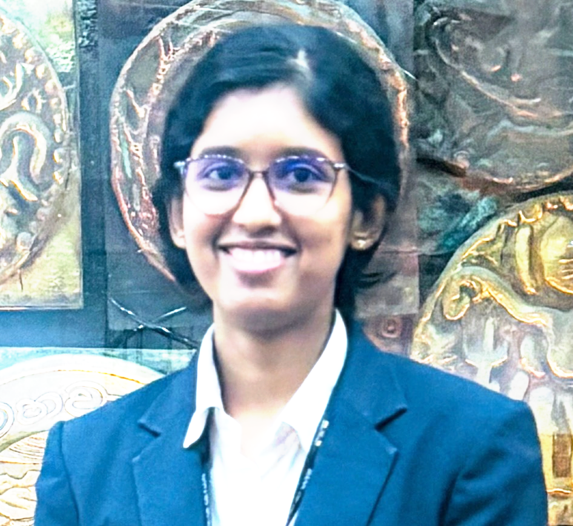
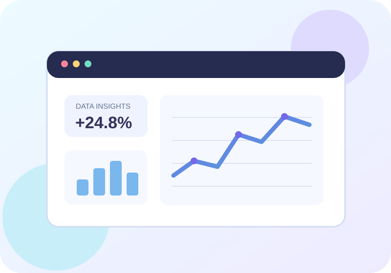
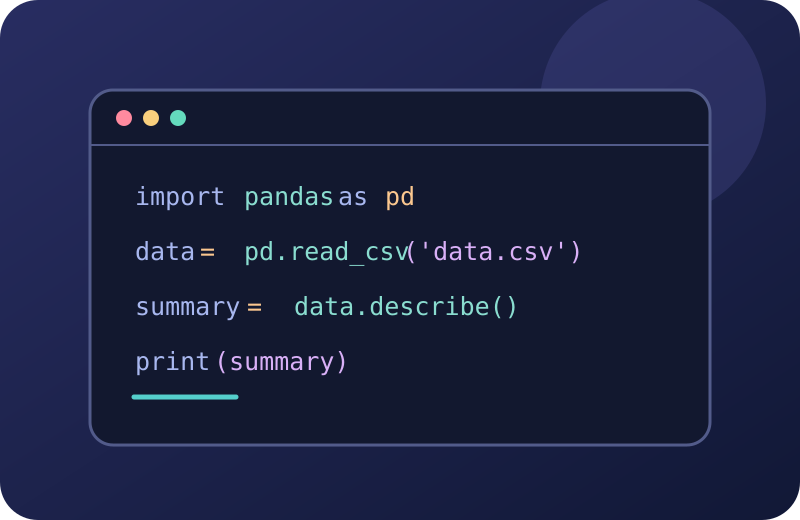

2026
Higher National Diploma in Computing
Specialization: Software Engineering
ESOFT Metro Campus — Kurunegala
CompletedComputing graduate • Banking professional • Aspiring data science specialist
With experience in banking operations and a background in software engineering, I'm passionate about using technology, analytics, and problem-solving to make a meaningful impact.

I'm a Higher National Diploma graduate in Computing, specializing in Software Engineering, and a banking professional with experience since 2018.
My background combines customer service, administration, data handling, and a growing technical toolkit. I'm interested in continuing my education in Data Science and deepening my knowledge of analytics, programming, databases, and data-driven decision-making.
I bring analytical thinking, communication, teamwork, attention to detail, and a willingness to keep learning.
Get in touch ↗
Building a strong foundation in operational excellence and service.
Supporting day-to-day banking and administrative operations while maintaining accuracy, professionalism, and confidentiality.
*Experience dates are reproduced from the supplied CV.

AI • Machine Learning • Data Visualization • Financial Data Analytics • Business Intelligence
Specialization: Software Engineering
ESOFT Metro Campus — Kurunegala
CompletedScience Stream
Kg/Pinnawala National School
Chemistry — S · Physics — S · Biology — S
Kg/Pinnawala National School
5 A passes · 2 B passes · 2 C passes
I'm keen to build deeper expertise in data analytics, artificial intelligence, machine learning, and financial data analytics — bringing together my computing education and banking experience.
Interested in connecting about learning, technology, data, or professional opportunities? I'd love to hear from you.
Reach me directly by email or visit my GitHub profile.
Email me ↗Visit GitHub ↗cjishara2014@gmail.com